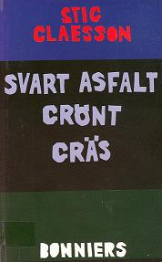

Södermalm i tid och rum. Stockholm
Ur Svart asfalt, grönt gräs, Stig Claesson, 2000
Det är mitt i juni. Jag har just fyllt femton år denna underbart vackra försommardag och jag går Katarinavägen mot Slussen. Det är dagen före skolavslutningen och jag har fått jobb, det är till det jobbet jag är på väg. Jag har inte bråttom. Jag går i sommarkostym och skjorta och slips och på huvudet har jag en gråvit keps och jag är nyklippt. Jag bor inte längre Duvnäsgatsbacken.
Den första oktober det året jag gick första terminen i andra klass hade vi flyttat in i Sunnerdahlska stiftelsens barnrikehus, kvarteret Kristallen. Först till kvarterets port mot Borgmästargatan till en lägenhet på nedre botten. En lägenhet med kök och ett rum och en sovalkov. Vi hade utsikt mot gården och fyra fyrkantiga soptunnor. Det gjorde ju ingenting.
Vi hade toalett inomhus och rinnande källvatten och det var ju bra. Centralvärme fanns också. Det var ju också bra så vi slapp hålla på med ved som vi varit tvungna till innan. Men ingenting annat med lägenheten kändes bra.

Det var helt omöjligt för mig att känna någon som helst trivsel i den. Mina föräldrar och systrar sa ingenting därom, men jag tror de kände samma otrivsel som jag.
Lägenheten i Duvnäsgatsbacken låg för det första tre trappor upp och var ljus och vi hade haft utsikt både mot gata och gård. Men vad jag saknade mest var den trivsel en vedeldad köksspis och en brinnande kakelugn ger. Och om min älskade ängel Nancy någonsin tänkte på mig och skulle få för sig att skicka mig ett brev avstämplat i det fjärran Kalifornien så skulle hon inte veta min adress.
Ändå kanske det var tur vi kom dit. Min far som nu definitivt var arbetslös klarade på grund av sin astma, som blev allt svårare, bara med största möda av vedbärningen från vedkällaren så högt som tre trappor eller gå på torrdassen på gården. Det var hans sjukdom som gjorde att vi fick flytta in i Kristallen. Man skulle annars ha minst fyra barn och vi var bara tre. Min far kom att räknas som fjärde barnet eftersom han i stort sett var sängliggande. Något år senare gjorde hans sjukdom att vicevärdinnan, som var drottning av kvarteret Kristallen, tillät oss flytta rätt över gården en trappa upp med ingång från Klippgatan, den ingång som inte är inkörsport. Det har betydelse. De som bodde så de måste gå genom inkörsporten hade inga fäder alls.
Drottningen av Kristallen var förmodligen stockholmska av tredje generationen så snorkigt stöddig som hon var där hon härskade över så många som närmare femhundra barn med inflyttade landsortsbor som föräldrar varav de flesta hjälplöst arbetslösa och om de hade arbete utfrusna på sina jobb då de inte tilläts ha fackföreningsbok. Det senare skulle det nog bli ändring på trodde man. Med all rätt trodde man det, ty helt nyss, bara några få dagar innan vi flyttade från Duvnäsgatan, hade Per Albin Hansson bildat en socialdemokratisk regering efter bondeförbundaren Axel Pehrsson Bramstorp. Bramstorp blev jordbruksminister och, jag ska säga det redan nu, det är honom jag är på väg till den där sommardagen då jag är femton år och långsamt går Katarinavägen mot Slussen.
Vilka av barnen som var värdiga undersåtar till drottningen av Kristallen bestämde inte hon över. Det bestämde gårdens alla barn. Kvarteret har en stor gård. Man behövde som nyinflyttad bara se dem alla för att förstå att för att bli accepterad som en av dem hade man inte stor hjälp av knytnävarna. Man fick försiktigt, först genom de närmaste grannarnas barn, försöka lista ut vilka regler som gällde och vilka av de stora killarna man skulle anse vara ledargestalter. Man måste försöka förstå vem som var ledare för den åldersgrupp man tyckte sig böra tillhöra. Ett kvarter med så många barn har inte bara ett kärngäng. Jag antog att man måste tillhöra ett gäng för att ha fri lejd och det var man också tvungen till om man inte hade den enorma integritet och den enorma styrka som krävdes för att stå utanför allt vad gäng hette. Jag accepterades ganska snart då jag med rätta kunde säga att jag tillhört åsögatsgängets stenhårda gossar.
Jag fick också hjälp av att man började tömma Gamla stan på barnfamiljer och de som kom från Gamla stan var för oss alla från östra Södermalm direkta utbölingar. Utbölingar och våra svurna fiender.
Ingen av oss skulle ensam eller ens i en liten grupp på tre eller kanske fem kunna gå genom Gamla stan utan att få spö av gamlastanarna om vi så valde Västerlånggatan. Om några av oss till exempel fick för oss att vi skulle gå och se på skyltningen en skyltsöndag vid jultid kunde vi gå så långt som till Järntorget. Där kunde vi sen stå tills det kom ett par gående arm i arm och, om de såg ut att sikta in sig på Västerlånggatan, gå tätt bakom dem och försöka föreställa deras barn. Men inte heller det var alldeles riskfritt. Inte enligt vad som påstods i vilket fall.
Samtidigt med mig flyttade nu en hel del gamlastanare in i vårt kvarter och de insåg att här gällde bara knytnävarna och de slog sig bokstavligen till respekt.
Vid alltför våldsamma slagsmål öppnade Drottningen sitt fönster fyra trappor upp mot gården och vrålade medan hon knackade med fönsterhaken på fönsterblecket: Upp i Lunden, barn. Med Lunden menade hon Vitabergsparken och då den del som ligger kring Sofia kyrka.
Självklart tillbringade vi en stor del av vår tid i Vitabergsparken. Men Vitabergsparken är ju ett jättestort område, så stort att ett gäng inte bara kan säga till ett annat gäng: Vi ses i Vitabergsparken.
Hade Nancy gått kvar i min klass hade jag inte kunnat säga till henne: Låt oss ses i Vitabergsparken för en kyss eller två. Nancy hade inte hittat mig. Och jag inte henne. Vi kallade aldrig Vitabergsparken för Vitabergsparken.
Den del Sofia kyrka ligger på hette Nya tippen och den del där uteteatern nu ligger hette Gamla tippen. Men både Nya tippen och Gamla tippen är stora områden.
Nya tippen kallades alltid bara Tippen, men jag skulle inte hitta Nancy om jag sa att vi skulle mötas på Tippen. Jag skulle tvingas precisera mig. Jag skulle kunna säga att jag ville möta henne i Runddelen, i Tussebacken, på Jordkullen eller på Segelbergen och jag skulle kunna precisera mig ännu mer genom att säga att vi skulle mötas under Krikonträdet och Kamerabiten på Jordkullen.
Om man går upp i Vitabergsparken från Borgmästargatan och fortsätter förbi Bergsprängargränd kommer man att nå Tussebacken som fått sitt namn därför att någon gång någon som bodde i trähusen på höger hand haft en hund som hette Tusse. Fortsätter man en bit till har man Jordkullen på höger hand och mitt på Jordkullen ligger Kamerabiten. På den biten är det lerjord och den leran gjorde vi kameror av. En fyrkantig bit lera man sedan gör ett hål i framifrån och ett hål i uppifrån och vid varje hålända sätter man en spegelbit och har så en kamera.
Alla de till synes konstiga namnen kan förklaras, men Drottningens befallning att vi skulle bege oss upp i Lunden var en obegriplig order. Ingen plats på Tippen kallades Lunden.
Drottningen blev sällan åtlydd och någon större respekt åtnjöt hon aldrig. En gång när hon knackade på sitt fönsterbleck för att få vår uppmärksamhet kom en av gamlastankillarna, som var för klen för att slå sig in i ett gäng, på hur han skulle bli accepterad av oss. Han vrålade till Drottningen: Stäng fönstret och stick och skura Västerbron med skäggvårtan, ditt jävla kräftbete. Drottningen smällde igen sitt fönster med en gång och den klene gamlastanaren kunde nu välja att bli accepterad av vilket gäng han önskade tillhöra.
För att vi inte alla skulle bli gangsters, Dillinger som skjutits ned några år tidigare på öppen gata i Chicago var en av våra hjältar, tvingades vi på kvällarna, de flesta av oss, att binda borstar eller spela teater. Kristallen har en fin samlingssal.
Av alla obegripliga pjäser vi anmodades medverka i började man med Gustaf af Geijerstams Jöns i Nöbbelöv, så att binda borstar var mig en begripligare sysselsättning än att lära sig repliker i en bondepjäs. Anledningen kan ändå vara en annan. Jag satt hellre tyst och band borstar än jag avslöjade att jag kanske passade bara alltför bra in i en pjäs i bondemiljö.
Om vi nu slogs på vår gård pågick ett annat slagsmål som berörde många av oss. På sensommaren det här året var Spanska inbör deskriget ett faktum. I augusti förklarar general Franco för en tidningsman att hans enda önskan är att befria Spanien från kommunismen och tidningsmannen säger något om att det kan betyda att han måste skjuta ner halva den spanska befolkningen och Franco svarar: Ja, kan min fosterlandskärlek gå längre? Folket skall räddas om jag så ska skjuta ihjäl det?
Om det nu är general Francos avsikt att skjuta ihjäl varenda spanjor så får han hjälp av italienska och tyska arméer. Stormakterna beslutar sig för att inte lägga sig i detta interna råkurr och låtsas som om det regnar när Madrid, Almeira och Guernica bombas.
Ett tiotal från vårt kvarter anmälde sig frivilligt för att lägga sig i det. Hur många som verkligen reste vet jag inte, men ingen av dem kom tillbaka. Det skulle bli storkrig. Frågan var om Per Albin Hansson kunde hålla vårt land utanför det krig alla vettiga människor visste skulle komma.
Konstigt nog anser många att vi i vårt land, trots den stora arbetslösheten, lever i en högkonjunktur. En svensk författare har en önskan: Demokratin Sverige gassar sig i högkonjunkturen. Hur bra vi har det vet vi inte förrän efteråt. Per Albin skiner som en sol över oss, och hans blommiga blå morgonrock är en fridens symbol. Måtte han aldrig behöva bli en diktator för att rädda en hotande demokrati, måtte aldrig hans blå morgonrock förvandlas till en röd pansarskjorta?
Han skulle bli en bra diktatorstyp, Per Albin. Ser ni att han är lite lik Mussolini när han är butter eller allvarlig? Men vi föredrar honom som den leende landsfadern Per Albin framför den stränge diktatorn
Måtte vi alla uppföra oss väl? Det var nog en önskan alla mödrar i vårt kvarter kunde instämma i åtminstone vad gällde barnen:
Måtte de alla uppföra sig väl. Våra fäder verkade ha slutat hoppas på nånting. De slogs även de ibland sinsemellan kallande varandra jävla skåning eller jävla gotlänning eller jävla dalmas eller vad de nu ansåg lämpligt att ta till för att få avreagera sig i ett slagsmål som annars med säkerhet gått ut över hustrun.
Ingen far och ingen mor i vårt kvarter tordes slå något av sina barn så det kom till allmän kännedom. Gårdsgängen skulle hämnats på dem på ett mer eller mindre infernaliskt sätt. Men annars skulle Per Albin Hanssons soliga ansikte lysa över oss alla. En del trodde det, andra trodde det inte.
En tidning kunde skriva: Den socialdemokratiska valsegern var icke överraskande, även om man hoppats att svenska folket mera oförvillat skulle kunna se på landets problem och icke blint falla i den fagra men farliga löftesgrop socialdemokraterna grävt. Men dårat av allt välfärdstal och i fåvitsk tro att socialdemokraterna skola kunna uppehålla de goda tiderna har folkets breda lager lagt sina röster för Per Albin Hanssons fötter. Han kan vandra vidare mot sitt ödes fullbordan.
Vilket öde som här avses är svårt att säga, men man menar att så länge vårt land kan profitera på andra länders krigsrustningar så klarar sig Per Albin, men om det blir krig och vi blir hänvisade att klara oss av egen kraft ska Per Albin förlora spelet. Vilket spel man avser är också svårt att säga. Att det rör sig om ett krigsspel är inte svårt att gissa.
Våra fäder, som alla tutat i oss att när vi nådde värnpliktsåldern så skulle ordet värnplikt sen länge ha upphört att existera, började nu bli ängsliga för att de kanske haft fel i påståendet. Kanske skulle vi ändå, vi små blåögda odågor till pojkar, en dag räknas som vuxna nog att bära gevär.
Kanske med laddade gevär stå och vakta denna för dem så obegripliga och ogästvänliga stadsdel inte bara vid Danvikstull och Skanstull utan även vid Hornstull. De som skulle skickas till Hornstull, visste de utan att förstå det, skulle vara mer rädda för sina soldatkamrater uppvuxna vid Hornstull än för eventuella fiender som skulle försöka ta sig över Årstaviken om nu inte gröndalskillarna kunde avvärja detta. Hornstullskillarna skulle i sin tur vara mer rädda för gröndalarna än för killar i främmande uniform.
Per Albin borde börja med att få lite ordning på Södermalm. Men som inflyttad skåning var han naturligtvis helt olämplig att genomföra detta. Genom Gamla stan var det otänkbart att han skulle kunna nå Götgatsbacken och Reymersholmsgängen skulle stoppa honom halvvägs ute på Västerbron. De visste i alla fall något om Stockholm. Om inte annat kunde de rabbla en ramsa de lärt sig i skolan: Stockholm ligger egentligen ingenstans då det dels ligger i Uppland, dels i Södermanland vid Mälarens utlopp i Saltsjön.
Där jag går den dagen nyklippt och just fyllda femton år Katarinavägen mot Slussen har jag alltså bakom mig detta att jag blivit godtagen, med list och något lite med användning av knytnävarna, i Kristallens stora barnahop. Kanske det varit rätt smärtsamt att bli prövad och godkänd som gängmedlem. Men det var ännu smärtsammare att åka ur gänget, vilket jag gjort. Inte helt naturligtvis. Ett gäng kan inte utesluta en medlem som vet allt om deras skummaste förehavanden och fullt behärskar deras fikonspråk. Dessutom visste de att jag skulle få ett helvete dem förutan.
Saken var den att jag bytte skola. Det var ingenting jag önskade. Det var nånting min Fröken sagt åt mina föräldrar att hon önskade. Och följden blev att jag sen inte hade någonting att säga till om när det gällde skolgången. Men hade jag då vetat vad som väntade mig hade jag stuckit till Centralen och smugglat mig på ett tåg och farit till morfar på landet och blivit en tystlåten skomakare.
Jag skickades till Katarina Real som då låg på Allhelgonagatan på enligt min mening fel sida om Götgatan. Skolbyggnaden ligger där ännu som Statens Scenskola. Då just som Katarina Real.
Denna dag gick jag för att om inte direkt tala med jordbruksminister Bramstorp, så med en av hans höga ämbetsmän i Jordbruksstyrelsen på Klara Norra Kyrkogata nummer tolv. Bonntolvan kallad. Jag skulle ta eller borde säga att jag tagit realen, men faktum är att det vet jag inte. Jag lämnade Katarina Real dagen före avslutningen och jag hämtade aldrig något betyg och vet alltså inte om jag tog realen eller ej. Det var inte mitt påhitt att jag skulle gå till Jordbruksstyrelsen heller. Min mor städade där och hade frågat en man i chefsställning om han kunde ordna ett arbete till hennes son, vilket han sagt att han trodde han kunde. Jag skulle infinna mig hos honom en viss dag, denna soliga junidag, så han fick ta sig en titt på mig. Lika lite som han skulle fråga mig om jag tagit realexamen frågade någonsin mina föräldrar om jag gjort det. Ingen har någonsin bett mig visa ett slutbetyg.
Ändå var det detta alla sagt till en när man gick i skolan: att det var det slutbetyg man en gång skulle få som var vägen till de verkliga framtidsjobben. Till en framtid över huvud taget och nyckeln till de portar som slöt sig om läroverk och universitet. Och det är det kanske, jag ska inte säga emot den åsikten.
Från mitt kvarter var det bara jag som skulle gå i Katarina Real. Men jag hade en skolkamrat som också tvingats till detta, något mindre motvilligt än jag kanske, han hette Jan-Ola och bodde i hörnan Klippgatan-Skånegatan, mitt emot min port. Det huset var HSB:s första experimenthus för enrumslägenheter med kök, ettor kallade, och meningen var nog aldrig att där skulle bo ett barn. Men nu bodde där högst upp ett barn, Jan-Ola.
Han lekte naturligtvis aldrig på våran gård eller var med i nåt gäng, men han och jag läste ibland läxor tillsammans uppe hos honom. Hans far var restaurangmusiker och dessutom var han radioamatör och kunde sända runt hela Europa och också mottaga sändningar. Han visste vad som egentligen försiggick ute i världen och han var, trots att han inte heller fick organisera sig politiskt, en brinnande antinazist.
Jan-Ola kunde också sända och ta emot radiomeddelanden från och till andra radioamatörer ute i Europa och kanske ännu längre bort. Han kunde knacka morsealfabetet och läsa det och det han sa pågick bland helt vanligt folk ute i världen visste också jag. Han var med andra ord en spännande kamrat. Farlig att ha skulle det visa sig. Men inte det första året i Katarina Real.
Förutom honom var det två killar i vår ålder från Stiftelsehuset för fattiga judar, helt enkelt kallat Judehuset, som låg vid sidan av HSB:s enrumshus, som också skulle gå i Katarina Real. Judekillarna kände jag bra, de tillhörde de flesta av dem samma gäng som vi, och de två var självklart lika mycket emot att gå i en skola på fel sida om Götgatan som jag och Jan-Ola var. Vi visste att vi skulle komma att få spö. Vad vi inte anade var att vi faktiskt inte skulle få spö för att vi kom från gator öster om Götgatan. Judekillarna skulle få spö just för att de var judar och Jan-Ola och jag för att vi var deras vänner. Det var inte alldeles lätt att förstå från början, det blev lättare sen. De stora killar som behärskade Katarina Reals skolgård var medlemmar i något som jag tror kallades Nordisk samling och gick i stövlar och ridbyxor och kallade sig kadetter i värntjänst. De tillhörde Lindholms soldater som hade som motto att höja sanningens blixtrande svärd.
Till en början, som sagt, gick det an. Men det blev värre, tyvärr mycket värre. Hälften av lärarna hade heller inget emot att ge en judekille en extraörfil, och en judevän som öppet förnedrade sitt ariska blod kunde gott få sig två extra örfilar. De lärare som faktiskt försökte sätta stopp för denna totala dumhet var de som sen först inkallades och ersattes av pensionerade sadister.
Då, den där dagen innan jag borde vara i skolan och ta emot slutbetyget, men i stället var på väg Katarinavägen, hade fältmarskalk Paulus kapitulerat vid Stalingrad och Italien kapitulerat utan villkor så det var ingen tvekan om att de allierade skulle segra.
Men det trodde självklart inte nån som kallade sig kadett i värntjänst och fortfarande tilläts gå uniformerad och i stövlar i skolan till och med bärande gevär. Det låter lika snurrigt som det var.
Jag vet inte om det är det som egentligen upptar mina tankar på min väg till Bonntolvan. Jag hade under åren haft många extra jobb. Dels som cykelbud för Blå Expressen på Kocksgatan. Dit var det bara att gå efter skolan och låna en tung cykel eller en trehjuling och ge sig iväg på de ärenden firman hade. Det kunde gälla så enkla saker som att åka och hämta brev och se till att de kom till rätt innerstadsadress i tid eller att piska mattor åt nån tant på Östermalm. Det gav pengar man visserligen skulle lämna där hemma, men det gav också dricks.
På den smällkalla vinterns jullov hade jag kört ut paket åt Järnvägen efter häst. Mitt distrikt var nedre Kungsholmen. Det gav också en hel del dricks.
Jag behövde inte lämna mer än tredjedelen av vad jag tjänade hemma och det jag fick behålla gick jag på bio för. På bio gick vi jämt.
Sen hade jag upptäckt det relativt nya Medborgarhusets bastu, och jag försökte bada bastu varje dag. Och jag började dansa. Jag gick på Vinterpalatset vid Norra Bantorget.
Eftersom jag gick i Katarina Real blev jag aldrig mer riktigt accepterad i Kristallens kärngäng. Men den där uteslutningen, som ju inte jag kunde rå för, krävde att jag tog hämnd. Och jag tog hämnd.
Kristallens stiligaste flicka, som hette Rut och som alla gärna ville be gå med på bio, beslöt jag mig för att erövra. Det skulle inte vara lätt. Rut höll sig för sig själv. Dessutom hade hon en storasyster som var något av en revystjärna och Kristallens mest berömda dam. Berömmelsen var kanske inte stor, men den fanns, och hur liten den än var så smittade den av sig på Rut som därför ansåg sig att ha rätt att gå med högburet huvud och ge varje närgången gosse en avvisande blick.
Hon försökte skrämma sig till att få vara i fred och hon lyckades. I ett ögonblick av totalt mod, och med tanke på att mitt hjärta redan en gång krossats av Nancys kalifornienresa, gick jag en kväll resolut upp till hennes dörr, hon bodde en trappa upp i utgången mot Bondegatan och när hennes mamma öppnade och undrade vad jag ville yttrade jag min väl inövade replik: Får Rut komma ut. Det fick Rut.
Rut kom till dörren och såg på mig och jag sa: Kom, vi går på bio. Av ren häpenhet gick hon in efter varma ytterkläder, det var en hårdkall vinterkväll, och följde med på bio. Jag hade henne fast.
Efter bion bjöd jag henne på konditori. När jag sen avlämnade henne i hennes port blev vi stående där en stund vid värmeelementet och jag kysste henne. Hon hade mig fast.
Vi började umgås mest varje kväll och jag var tveklöst kär upp över öronen. Och Rut med. En kväll säger Rut åt mig att följa henne en trappa upp och sen in. Hon bodde i köket. Här klädde vi av oss nakna och kröp ner i kökssoffan och började lite ovant treva på varann. Lite mer ovant än vi egentligen behövt, vi hade en rätt stor vana vid varandras kroppar, men inte så här intimt.
När romantikens blomma just skulle till att slå ut som aldrig förr kom hennes mor in i köket. Det som pågick kunde hon inte tillåta pågå. Hon tog ett fast grepp om min nacke och kastade ut mig naken i farstun. Där stod jag sen en bra stund innan kläderna kom efter.
När jag gick rätt över gården och in till mig tittade min mor på mig och frågade om jag gjort något så dumt att polisen hållit mig fängslad och kroppsvisiterat mig. Jag sa som sanningen var att ingenting hade hänt, att Ruts mamma av nån outgrundlig anledning fått tag i mig och skakat om mig i tron att jag var nån annan.
Min mor lät sig nöja därmed. Men hon anade att det var något stort som hänt mig. Intermezzot med Ruts mamma hindrade oss inte att även i fortsättningen umgås. Och jag återvann en stor del av min förlorade respekt i gängets ögon.
Det är nog i korthet vad jag tänker på när jag går över Slussen och över Järntorget och längs Västerlånggatan ut på Drottninggatan och når Klara norra.
På Lantbruksstyrelsen träffar jag den man jag är tillsagd att träffa och som jag tror ska förhöra mig. Det gör han inte. Han säger: Du ska gå upp till hörnhuset Drottninggatan-Vattugatan och gå in under klockan och upp till Lantbruksförbundets byggnadsförening. Du får jobb där.
Att han säger Under klockan beror på att där hängde den klocka, eller snarare satt den klocka fastmurad, som visar dag, månad och år och som nu hänger i en kåk på Norrmalmstorg mot Hamngatans östra sida. Men huset där klockan fanns från början revs när det övriga Klara revs. Att man inte slängde klockan på sophögen ute vid Haga är ett under.
I alla fall gick jag dit jag var tillsagd att gå. Till Lantbruksförbundets alldeles nystartade arkitektkontor. Där blev jag anställd av chefsarkitekten som sedan kom att bli min vän och ett stort stöd senare i livet. Det trodde nog varken han eller jag den dan. Jag fick jobb som springpojke. Och jag skulle lära mig kopiera ritningar. Han informerade mig en smula om vad arkitektkontoret planerade att bli, då det en gång blev utbyggt och ingenjörer och arkitekter i rätt antal anställts.
Han visade mig några fotografier på röda bondstugor och små ladugårdar. Vi ska hjälpa bönderna, sa han. Vi ska bygga om varenda liten bondstuga i landet om jag får min vilja igenom. Och det får jag.
Förbättra, standardisera och göra livet lättare för bönderna.
Hade jag vetat vad som skulle bli resultatet av vad han sa hade jag gått därifrån. Och han hade gått med mig om han anat det. Nu skulle jag återkomma nästa dag klockan nio. Innan jag gick sa han: Du har väl aldrig sett en bonde på vykort. Nej, sa jag. Inte på vykort.